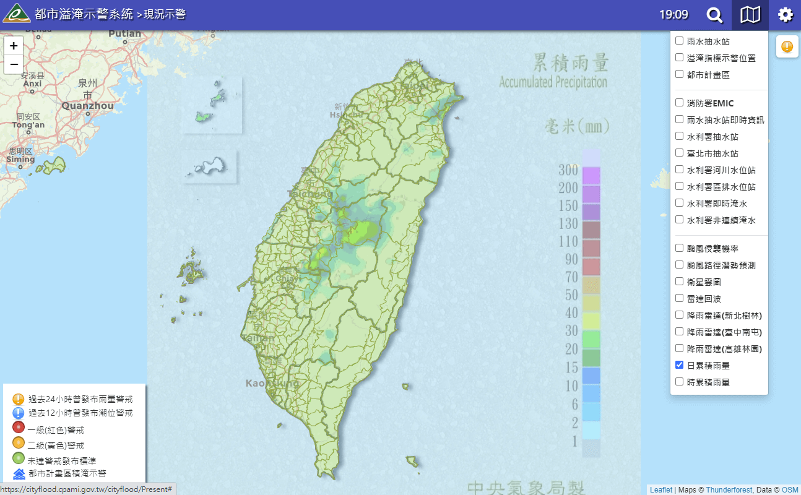

都市排水規劃複合型排水模組檢核與預警分析應用計畫
委託單位：內政部營建署【 研究背景 】
營建署現行「都市溢淹示警系統」自民國104年上線以來，已穩定提供中央機關及全臺各縣市政府颱風豪雨時期的都市淹水預警資訊。為延續政策推動執行，本計畫配合營建署「前瞻基礎建設計畫-水環境建設計畫-水與安全-縣市管河川及區域排水整體改善計畫-下水道及都市區其他排水」執行，延續前期計畫的街道/下水道SWMM模式檢核作業，並將各案件檢核成果應用至營建署「都市溢淹示警系統」，期可將既往以鄉(鎮、市、區)為警戒發布單位，逐案提升為以都市計畫區街道為警戒發布單位，藉此提供更為精確的溢淹地點。
【 研究目的 】
本計畫依照「都市防災示警系統水位監測與預警分析作業建置計畫」方法，針對營建署前瞻基礎建設計畫所核定補助雨水下水道(檢討)規劃案，所建置的街道/下水道SWMM模式進行檢核作業；並將檢核成果持續應用至「都市溢淹示警系統」，以建置街道溢淹機制資訊，並持續擴展降水預報分析機制與系統應用功能。計畫中並透過營建署於各都市計畫區所蒐集的下水道水位監測數據，進行各案水理模式的參數檢定與模式驗證。而後，透過優化系統計算效能，使平臺於颱風期間提供更為穩定且精確的都市計畫區積淹水警戒資訊。
本計畫亦針對兩大系統平臺進行功能擴充與維護作業，以達到符合使用者需求與系統問題排除等目的。此外，計畫中每年均辦理模式建置相關軟體基礎操作教學，全期教育訓練總量至少為15天150人，以使營建署及各縣市政府得有能力自行建置街道/下水道SWMM模式，並作模式基本調校及維護。
【 執行成果 】
街道溢淹範圍分析評估
計畫中採用營建署自2016年起，已完成四階段檢核的街道/下水道SWMM模式為基礎，給定10年重現期設計降雨(降雨延時為24小時、間距為10分鐘)進行演算模擬，以瞭解都市地區於10年重現期降雨條件下可能之淹水情況。圖1為彰化縣和美鎮所產製的街道溢淹範圍圖，為確認溢淹結果與溢淹範圍之合理性，本計畫亦採用相關報告之淹水位置分布圖與EMIC淹水通報紀錄進行比對，結果顯示計畫中所推估之街道溢淹範圍與實際淹水相近，應可作為災害應變執勤工作及災情分析作業之參考應用。
水理模式雨水下水道系統更新建置
計畫中針對已完成檢核作業的街道/下水道SWMM模式，與營建署「GIS圖資展示平台」之雨水下水道系統資料進行比對；並根據圖層屬性資料確認其竣工日期，以判斷該系統是否為檢核作業完成後，陸續新建置的雨水下水道工程，進而針對水理模式雨水下水道系統進行更新建置作業。以南投縣南投市(中興新村)為例，近年完成施作的雨水下水道工程為EE8支線的延伸段(如圖2中a、b位置)。而圖3為本次更新建置時模式所採用的編號與相關參數設定。
「都市溢淹示警系統」功能調整與維護
「都市溢淹示警系統」主要透過中央氣象局即時雨量、降水預報產品，以及雨水下水道各級雨量警戒值等資訊的整合，提供即時都市水情資訊，以掌握全臺各都市計畫區的雨量警戒狀況。而本年度系統擴充功能與維護內容說明如下：
-
1.全臺雨量現況警戒查詢功能
本系統透過即時降雨資料與各鄉(鎮、市、區)的不同延時警戒門檻值，綜合判斷全國各鄉(鎮、市、區)的雨量現況警戒；歷年警戒紀錄亦已存入資料庫供系統展示之用(如圖4)。本功能主要列舉各地警戒事件發生時間、各延時累積雨量及警戒狀態，讓使用者能夠更直觀地判斷全國各鄉(鎮、市、區)的警戒狀況。此外，使用者亦可透過篩選功能查詢特定降雨期間之雨量警戒事件。

圖4 警戒列表展示 -
2.氣象圖資套疊展示功能
本系統圖臺主要係介接中央氣象局的氣象圖層，使用者可透過勾選「雷達回波」、「降雨雷達」，以及「累積雨量」等圖層，於地圖畫面上套疊相關氣象圖資，以進行更精確之圖資應用與判斷(如圖5)。
 圖5 氣象圖資套疊展示功能